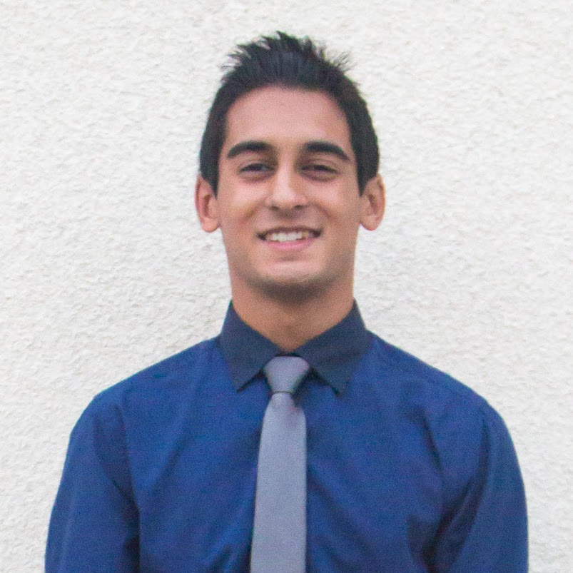
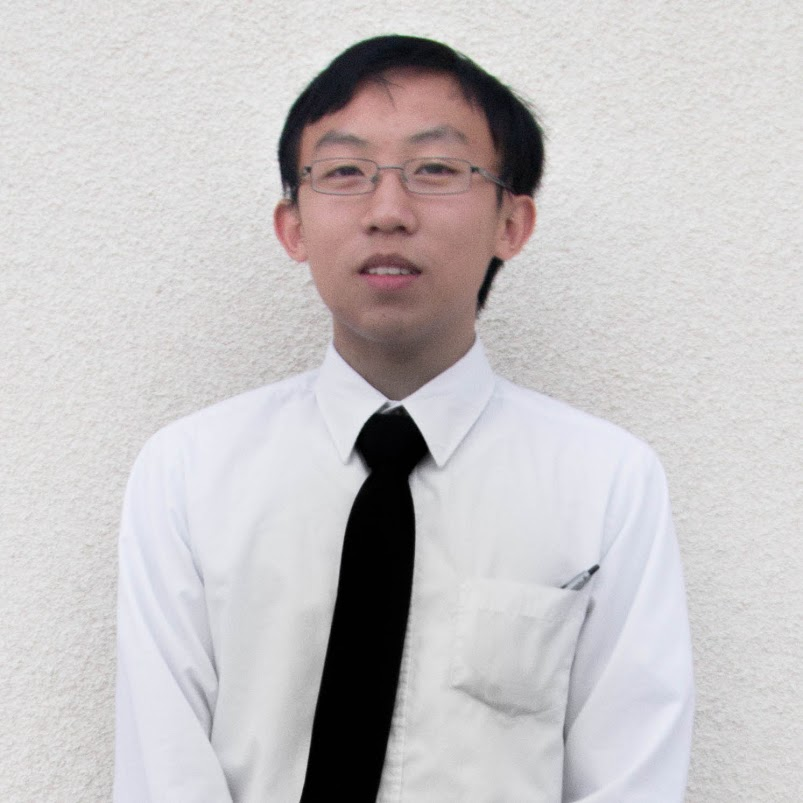
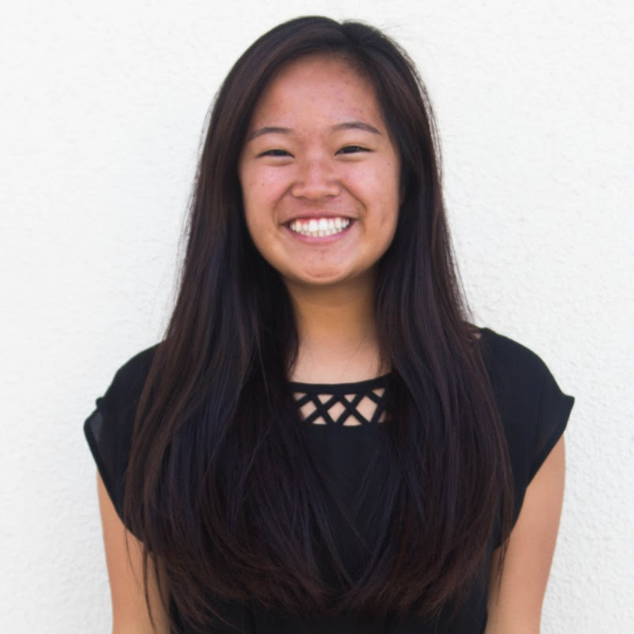
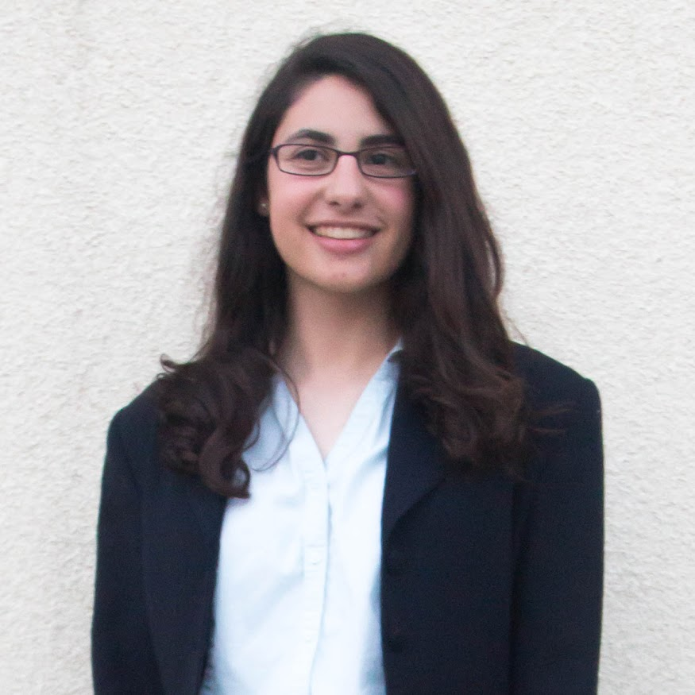
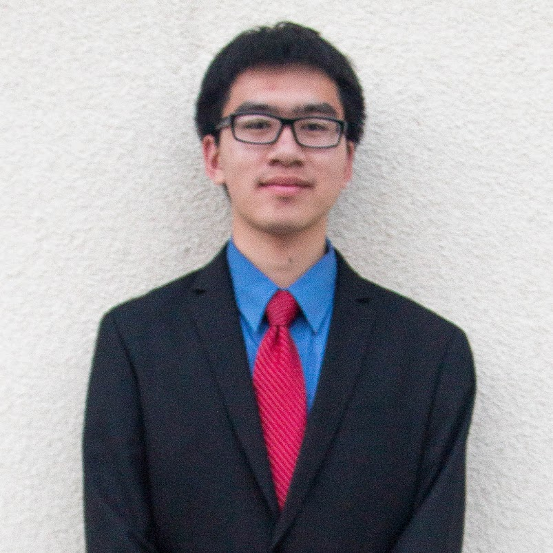
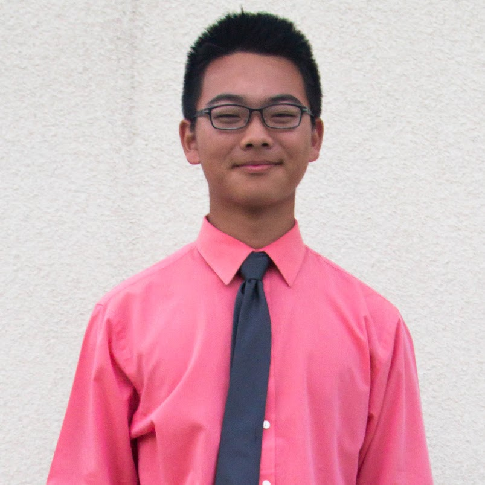
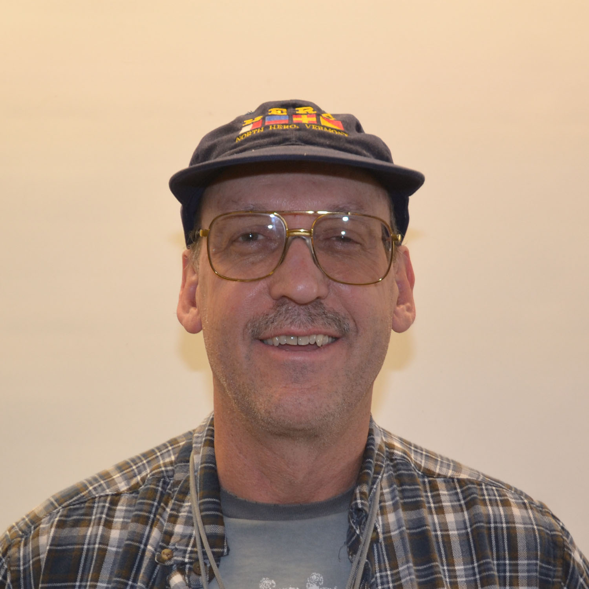

<?php
require('../common.php');

$templ->setTitle('Team');
$templ->render('header');
?>
<section>
<div id="board-wrap">
<div id="board">
    <div id="vp" class="three column post text-center team-member">
    	<figure></figure>
    	<h2>Vice President</h2>
        <h3>Joy Hsu</h3>
        <p>She manages logistics such as money and getting us to competitions. Additionally, she keeps dates and data organized.</p>
    </div>
	<div id="pres" class="three column post text-center team-member">
    	<figure></figure>
    	<h2>President</h2>
        <h3>Aayush Patel</h3>
        <p>The head lead of our group makes sure we have good relations with the school’s administration and pushes for our overall success.</p>
    </div>
	<div id="eto" class="three column post text-center team-member">
    	<figure></figure>
    	<h2>Executive Technology Officer</h2>
        <h3>Peter Yang</h3>
        <p>Manages the OA STEM website and domain along with any other technologies related to the STEM organization.</p>
    </div>
    <div id="pr" class="three column post text-center team-member">
    	<figure></figure>
    	<h2>Public Relations</h2>
        <h3>Shelly Luong</h3>
        <p>She maintains contacts with the community and surrounding companies all while being our marketing figure head.</p>
    </div>
    <div id="pub" class="three column post text-center team-member">
    	<figure></figure>
    	<h2>Publicist</h2>
        <h3>Jenny Chung</h3>
        <p>She does all of our graphic design work and photography.</p>
    </div>
    <div id="sci" class="three column post text-center team-member">
    	<figure></figure>
    	<h2>Director of Science</h2>
        <h3>Celine Veys</h3>
        <p>She exposes members to science competitions like Science Olympiad and Science Bowl.</p>
    </div>
	<div id="tech" class="three column post text-center team-member">
    	<figure></figure>
    	<h2>Director of Technology</h2>
        <h3>Michael Duong</h3>
        <p>He teaches young students basic Java knowledge while accelerating experienced coders into many programming events.</p>
    </div>
	<div id="eng" class="three column post text-center team-member">
    	<figure></figure>
    	<h2>Director of Engineering</h2>
        <h3>Byron Aguilar</h3>
        <p>He leads the building of robots, namely those for VEX and FRC. From mechanical to electrical, he’s sure to get things done.</p>
    </div>
	<div id="math" class="three column post text-center team-member">
    	<figure></figure>
    	<h2>Director of Mathematics</h2>
        <h3>Sean Park</h3>
        <p>He walks students through difficult math problems so they can succeed at math competitions all around.</p>
    </div>
</div>
</div>
<div id="mentors-wrap">
<div id="mentors">
	<div id="peralta" class="three column post text-center team-member">
    	<figure></figure>
    	<h2>Peralta</h2>
        <h3>NASA JPL</h3>
        <p>Though he generally works with microelectronics, that doesn’t stop him from aiding us in everything robotics.</p>
    </div>
    <div id="wright" class="three column post text-center team-member">
    	<figure></figure>
    	<h2>Mr. Wright</h2>
        <h3>NASA JPL</h3>
        <p>Holding a master’s in computer science, he has driven the Mars rover but helps us on our robots.</p>
    </div>
	<div id="miller" class="three column post text-center team-member">
    	<figure></figure>
    	<h2>Mr. Miller</h2>
        <h3>Boeing</h3>
        <p>His knowledge of computer science is very useful for our robotics programming team.</p>
    </div>
    <div id="patel" class="three column post text-center team-member">
    	<figure></figure>
    	<h2>Mr. Patel</h2>
        <h3>Boeing</h3>
        <p>As an electrical engineer, he works with satellites at Boeing and comes to share his knowledge with us on weekends.</p>
    </div>
    <div id="mentor-head" class="three column post text-center team-member">
    </div>
	<div id="pena" class="three column post text-center team-member">
    	<figure></figure>
    	<h2>Mr. Pe&ntilde;a</h2>
        <h3>Hewlett-Packard</h3>
        <p>As a parent of a student, his knowledge from tinkering with machines and using 3D printers greatly helps our team out. </p>
    </div>
</div>
</div>
</section>

<?php
$templ->render('footer');
?>